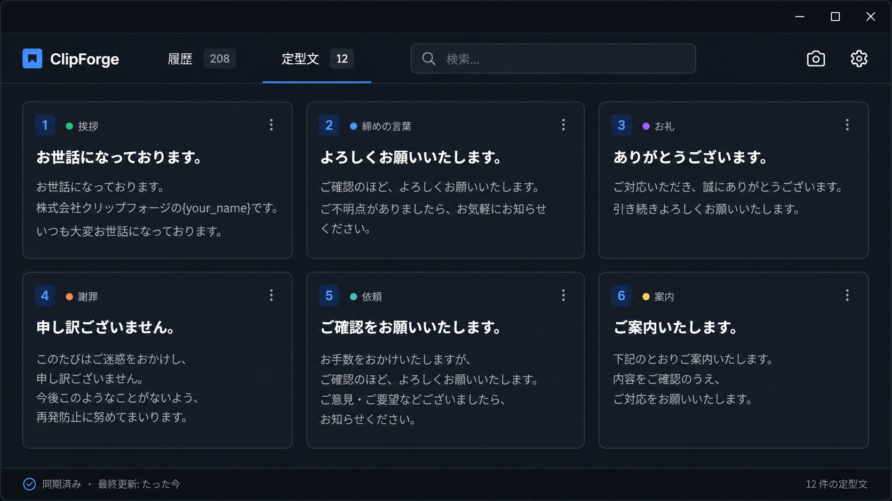
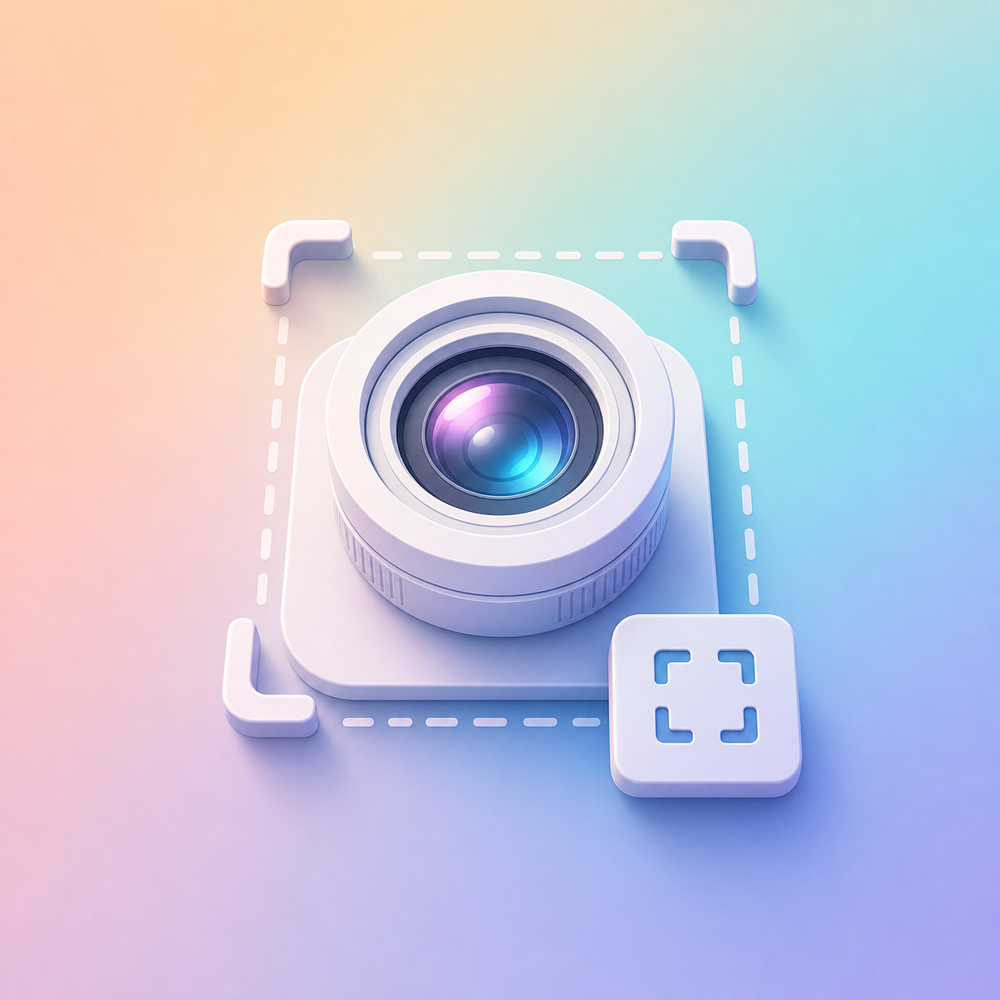
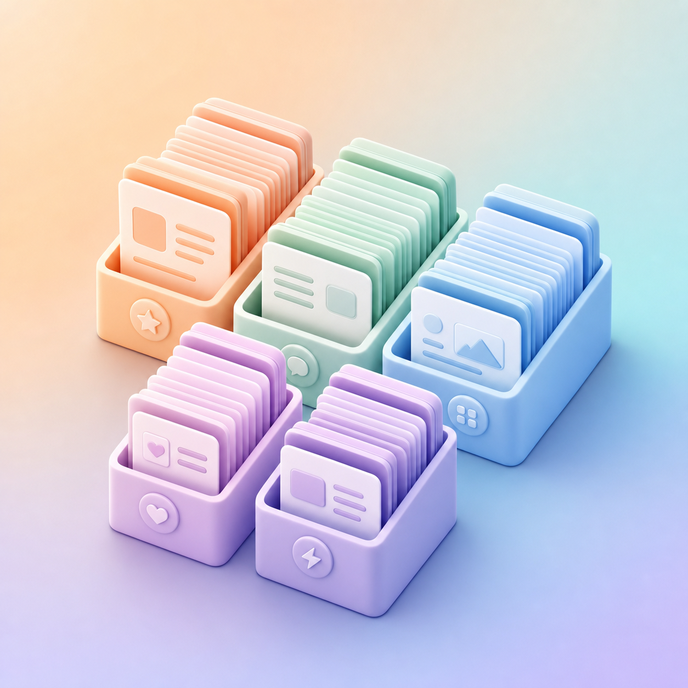
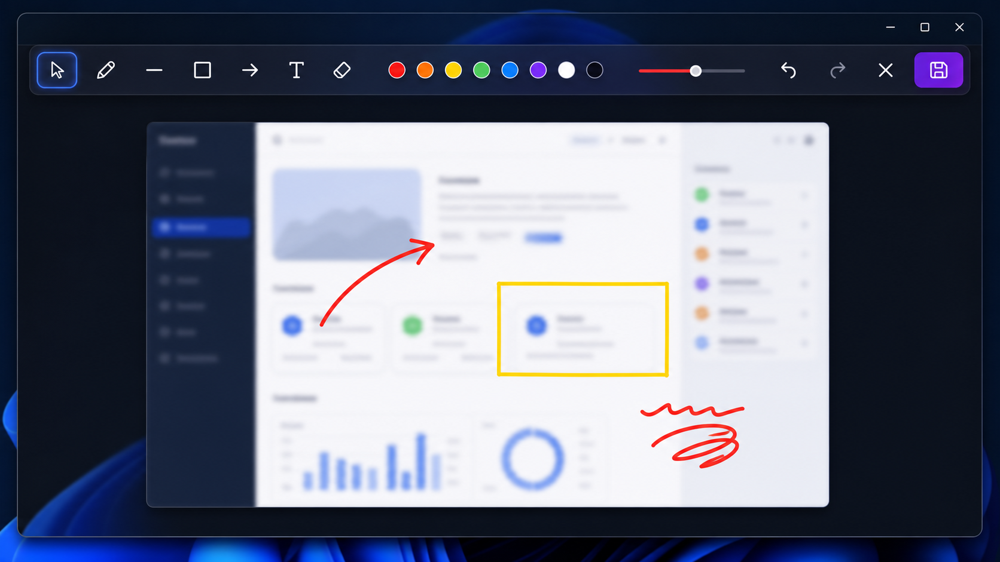
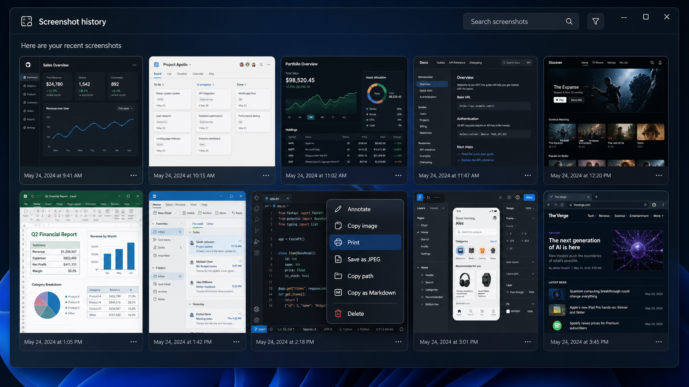

上端ホバーで一発呼び出し
画面上端中央へカーソルを近づけるだけ。常駐は最小限、必要なときだけ静かに現れる軽量パネル。

上端パネルを開くと、タブで 履歴 / スクショ / 定型文 を切り替え。
番号付きカードはクリック1つで貼り付けまで完了します。
CORE FEATURES
画面上端中央へカーソルを近づけるだけ。常駐は最小限、必要なときだけ静かに現れる軽量パネル。

📷 ボタン or Ctrl+Shift+S で Snipping Tool を起動。撮影画像は自動で履歴へ。サムネ表示・ファイルパス・Markdown コピーまで一気通貫。

メールの挨拶文、予約チェック、住所、メールアドレス、ショートカットコマンド等…用途別にカテゴリ分け。クリックで即貼付け、編集・並び替え・色分けも自由自在。
Windows のクリップボード変更を自動検出して履歴化。あとから検索して再貼付け。「さっきコピーしたあれ」がもう消えない。
v0.1.9 NEW
撮影した範囲スクショを、その場で印刷したり、JPEG として保存したり、 書き込んでチームに共有したり。ClipForge 1 つで完結します。

ペン・直線（Shift で 45°スナップ）・矢印・長方形・テキスト・消しゴム・選択ツール。描いた図形はクリックで移動・削除自由。8色パレット & 太さスライダー & Undo/Redo 完備。
注釈エディタを開くとウィンドウが画面いっぱいに広がり、細かい文字も書き込みやすく。閉じれば元のパネルサイズへ自動復帰。

スクショの右クリック → 「印刷」で印刷プレビュー（用紙・プリンタ・余白選択可）が即起動。思いついた瞬間に紙へ。
PNG → JPEG への高品質変換を内蔵。保存先と品質を指定するだけで、メール添付に最適な軽量画像に。もちろんメール本文にそのまま貼り付け可能。
FROM CLIBOR
Clibor で作った定型文 CSV をそのまま取り込めます。Shift-JIS の文字コードも自動判定し、グループ・タイトル・本文・ホットキーをそのまま引き継ぎます。
「設定 → 定型文 → CSV エクスポート」で書き出し。
設定パネル → 「CSV から取り込む」で選択するだけ。
定型文グループはそのままカテゴリとして再現されます。
HOW IT WORKS
ダウンロードしたインストーラーをダブルクリック。
WebView2 と SQLite を内蔵するのでランタイム導入は不要。
画面中央上端にカーソルを近づけると ClipForge パネルが現れます。
Ctrl+Shift+V でも呼び出せます。
履歴・スクショ・定型文。すべて 1 クリックで直前のアプリへ自動貼付け。
GET CLIPFORGE
完全無料・広告なし。ローカル SQLite に保存されるので外部送信はありません。